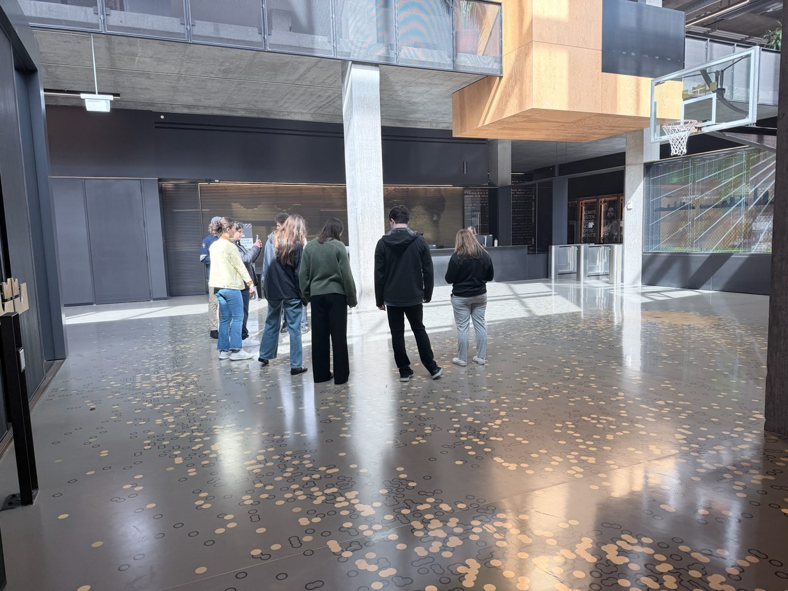
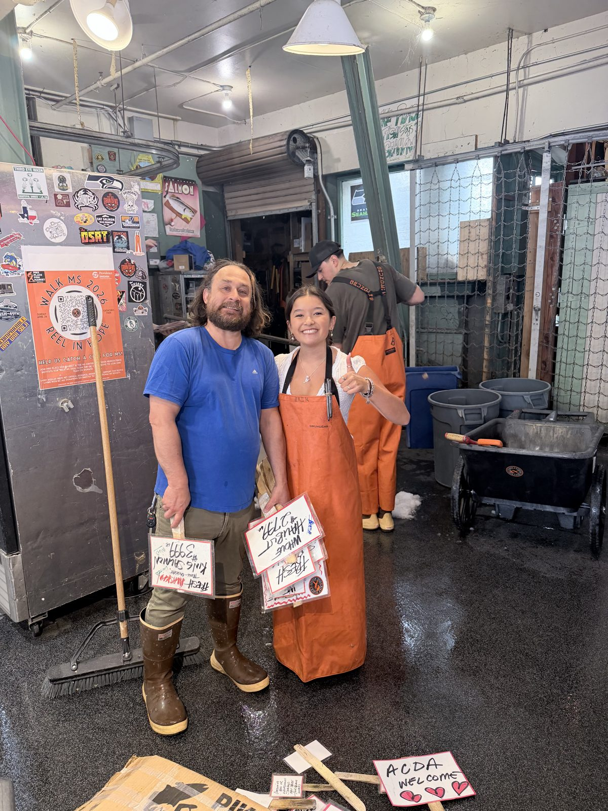

Seattle Mariners
- Strengthen the fundraising program by clarifying its story
- Benchmark best practices across MLB organizations
- Create new in-stadium experiences that attract diverse fans

Five live client engagements. Fourteen students on the road in Portland and Seattle. A first presentation to university leadership. This is the record of the semester, built for the clients, advisors, donors, and families who made it possible.

This semester, the Gonzaga Sport Consulting Group did something it has never done before: it delivered live consulting work to five real clients, sent fourteen students to Portland and Seattle for field experiences with world-class organizations, presented its outcomes to university leadership for the first time, and closed the spring with a graduating class of seniors who leave behind something they helped build.
What follows is a record of that semester, built for the clients, advisors, donors, and families who made it possible. The projects come first, because they are the reason the group exists. The trips and highlights follow. The students' own words close it, which is where the growth actually shows.
If you only read one section, read that one.
"Lean into the hard things. When I feel uncomfortable or in the unknown, that is where I have grown the most. And lean into communities. They are here to help."
Mia Crosby · GSCG Consultant, Spring 2026Every figure links to the part of the record it comes from.
Five live client engagements. Every project ended with a real presentation to the client.


Each team takes a scoped question from a client, researches it for a semester with a project advisor, presents a midpoint, and closes with a final presentation to the client, in person wherever a trip makes that possible.
"That presentation was one of the more stressful experiences I have had. I did not expect to walk into a full boardroom. Having that experience, presenting under pressure and feeling confident in the work we had done, was formative and memorable for all of us."
Noah Liu"This was my first time researching a topic in depth over an extended period of time. I had no prior knowledge of sports analytics coming in, and seeing all of that hard work pay off at the final presentation showed me what I am capable of when I lean into something unfamiliar."
Kenzie Bushnell · Gonzaga Informatics projectFourteen students traveled across two cities, meeting with world-class organizations, presenting real consulting work, and growing in ways that only happen through experience.
Seven students visited Nike World Headquarters, connected with alumna Torrey on careers and growth, then were hosted by the Portland Trail Blazers at Moda Center: touring the facilities, presenting midpoint work to their staff, and attending a game as their guests.





The Portland trip kicked off at Nike World Headquarters in Beaverton, where Gonzaga alumni Andrew and Hayley welcomed the group and shared their journeys from Gonzaga into the sports and business world. Hearing how former Zags navigated their paths, the pivots, the opportunities, the hard lessons, made the experience feel both inspiring and genuinely practical.
From Nike, the group connected with alumna Torrey for a candid conversation about professional growth from outside the traditional consulting track. Her perspective on staying adaptable and showing up fully in roles that look different from what you expected was one of the more memorable moments of the trip.
The experience culminated at Moda Center, where the Portland Trail Blazers hosted the group with a level of generosity that made a real impression. We met with members of their staff across multiple departments, got a behind-the-scenes tour of the facility and its premium spaces, insights that directly shaped our midpoint presentation, and then presented our work directly to their team. To close it out, the Trail Blazers hosted us at a game, giving the group a chance to see the organization in full operation and end the trip on a high note.
More than the individual stops, what stood out was how the trip deepened the group's sense of unity. The shared experience of traveling, presenting, and learning together created something that's hard to replicate in a classroom, and something the team will carry long after the semester ends.
Seven students spent two days behind the scenes at Lumen Field with the Seahawks, then presented a full semester of consulting work to the Mariners front office at T-Mobile Park.




The Seattle trip was a true combination of everything we'd worked toward all semester. It started Tuesday morning at Pike Place, grabbing breakfast together as a group before the big day, a simple moment that helped everyone settle in and reconnect before things got real.
From there, we headed to Lumen Field, where advisory member Michael and Lisa welcomed us with a full stadium tour and took time to share their journeys in the sports industry. One theme kept surfacing: you never stop learning. Lisa described how a colleague helped her learn Tableau, which helped her carve out a niche role, a perfect example of the kind of peer support we try to build within GSCG. After the tour, Michael sat in on a run-through of our Mariners presentation and gave us feedback we genuinely couldn't have found on our own. That kind of real-world perspective is hard to come by, and it meant a lot.
We grabbed a quick lunch at Hatback across the street, made some last-minute adjustments, and made our way over to T-Mobile Park. Francis, who had been guiding our work throughout the semester, was there along with Amanda and Jaron, who gave us a tour of parts of the stadium we hadn't yet explored. Finally meeting everyone in person after months of collaboration made the whole experience feel full-circle.
The panel discussion was one of the highlights, more conversational than most panels, offering a genuine look at what careers in sports actually look like across a wide range of roles. Francis mentioned that much of her day-to-day is filled with challenges, and those are the things she celebrates most. That perspective hit close to home for GSCG, where we push ourselves into hard things on purpose.
Batting practice was probably where we had the most fun as a group, on the field, in the dugout, taking photos. It's the kind of moment you don't forget.
The presentation itself covered SEA Change, ballpark segmentation, and theme night breakdowns. Shoutout to Eamon and Marcus, the Claude AI dashboards they built were genuinely impressive and drew a lot of attention in the room. Hearing afterward that the Mariners had independently identified many of the same things we had was one of the most validating moments of the semester. We're excited to explore the potential to work together again. That made everything worth it.
GSCG hosted its second annual Case Competition this spring, challenging participants to design a community-based event at T-Mobile Park for the Seattle Mariners. Six teams competed. The winning team pitched a Mariners Camp Out concept backed by strong data and research.

This spring, GSCG hosted its second annual Case Competition, challenging participants to develop a comprehensive, community-based event proposal for the Seattle Mariners. The goal: design an experience at T-Mobile Park that attracts new audiences and builds genuine, lasting engagement with specific community groups in the Seattle area.
Six teams competed, ranging from solo participants to groups of three. Each team had a week and a half from receiving the project scope to their first-round presentation, requiring real research, creative thinking, and the ability to work under pressure. The quality of work across the board was impressive, making it genuinely difficult to select only three teams to advance.
Advancing teams had the opportunity to meet with Case Competition Associates and GSCG directors for feedback before the final round, held in Wolff Auditorium with three faculty judges joining the panel. The winning team pitched a Mariners Camp Out concept that stood out for both its creativity and its feasibility.
On the planning side, the competition came with real challenges, including having to pivot clients last minute. The team navigated it quickly and without losing momentum. Looking ahead, GSCG plans to begin marketing earlier to build more awareness and traction on campus, and to deepen the integration of participants into the broader GSCG community well beyond the competition itself.
For the first time, GSCG presented its work directly to university leadership, sharing the semester's consulting outcomes, trip impacts, and the group's trajectory as a formal student organization.

This spring GSCG formalized its internal structure with a dedicated Associates tier. Seven individuals stepped into new roles across marketing, human resources, and information technology, creating a clear pathway from associate to full consultant.

One of the most significant developments this semester was the launch of a brand-new Associates tier within GSCG. Seven individuals stepped into these roles, collectively covering marketing, human resources, and information technology, bringing more specialized support to the group's operations and giving members early, hands-on experience in areas that matter to them.
Because these were entirely new roles, there were no playbooks to inherit and no templates to follow. That came with a learning curve, but it also opened the door to something valuable: a wide-open opportunity to define what these positions could and should look like going forward.
Even in their first semester, the associates delivered. Highlights included the successful launch of a GSCG newsletter, an expanded and more consistent social media presence, a client survey developed in direct support of an active consulting project, and internal infrastructure improvements across HR and IT that will continue to pay dividends in semesters ahead.
This semester was, in many ways, a proof of concept. GSCG demonstrated that the associate model works, and that even in its earliest form, it can produce meaningful results. With a full semester of lessons learned, the opportunity ahead is to refine role expectations, deepen the associate experience, and expand the program's impact both internally and for the clients GSCG serves.
GSCG leaned into AI-assisted development this semester, using Claude Code to build client deliverables, design the recap site, and produce the thank-you sites for Portland and Seattle supporters. It became a genuine part of how the group works. The dashboards Eamon and Marcus built for the Mariners drew the most attention in the room at T-Mobile Park.

The GSCG Advisory Board met several times this semester to strategize next steps for the organization, offering guidance on structure, client selection, and long-term growth. The group also hosted its first virtual social, bringing advisors and students together in an informal setting to build relationships across the network.

What the semester meant to the students who lived it. More reflections, trip by trip, are on the supporters' thank-you site.
"Lisa said she chooses her job based on where she is at in life. Right now she is 'enjoying the comfort.' That is a skill in my opinion: to just absorb the place you are at in life. ... Frances was quick to say more than 75% of their work is a challenge. She highlights failures rather than successes, noting that without failure there is no growth. ... One takeaway from this semester is the importance of your network and helping one another grow. It was so awesome to watch us all help one another, and to see professionals do the same thing throughout their careers."
Samantha Smith"You don't need everything figured out. You just need to be willing to learn and grow along the way. ... Lean into the hard things. When I feel uncomfortable or in the unknown, that is where I have grown the most. And lean into communities. They are here to help. ... I felt super nervous coming into this experience and felt like I was not capable. After this semester, I have grown in my ability to sit with being uncomfortable and nervous. In those moments, that is when I figure out new ideas. All ideas don't need to be 100% correct before sharing."
Mia Crosby"The best way to respond to tough client feedback is to rebound, regroup, and channel your frustration into improvement. When we critique each other's ideas, they get better. When we listen to feedback from others, we are better. ... I worked on the same problem for weeks without completely understanding why. Then, in the last couple of weeks, it all came together. I'm proud of how I kept getting my work done and trusting the process. I can see myself growing as a leader, presenter, and researcher."
Thomas Banzhof"My key takeaway was relating everything back to my why. The story I want to tell about my career should not be defined purely by successes or any given title. It should always be the push to do hard things and fail while doing them. ... We as students are so focused on getting the seemingly right answer that we end up not thinking about the impact. The true importance is why something matters to a client, and that reframing is going to be central to how I approach projects going forward."
Jake Scalzo"My biggest takeaway was the significance of crafting meaningful relationships within the business world. When someone takes their time to invest in you, you can learn from that. As you grow, do the same for others. ... I've grown in my communication abilities. Talking with and listening to people in many different industries led me to grow in my professional adaptability and networking skills. I've learned to tailor my language and approach to each professional I meet."
Lauren Smith"Growth doesn't always follow a clear or linear path. It reflects the effort, curiosity, and initiative you bring to it. One of my biggest takeaways was how important relationships are in the growth process. Growth is not something you do alone. ... Hearing that if you're not being challenged, you're not growing. That was a powerful reminder. This experience pushed me to step outside my comfort zone in a way that led to meaningful growth, both personally and professionally."
Paige Olson"There are a million ways to get where you want to be, and the path is not linear. Failure and rejection is just redirection. It is true, and it has been true in my own life. That reminder was one thousand percent necessary. ... When you are faced with a problem, figure it out. Lean into it, and lean into others to solve it. Set yourself apart by focusing on the little things: remembering names, following up, fostering connections."
Allison Kann"One of my biggest takeaways was learning not only how to find meaningful information, but how to present it in a clear and powerful way. It's super important to know your stuff, but also to be able to talk about it and express why it matters. ... Every week was a different thing to research, presenting a new challenge. Learning to stay versatile and adapt was a major growing experience for me."
Cameron Ames"Work put in behind the scenes can be crucial in nurturing your skillset and added value to an organization. Even when it is not visible, it supports a wider career outlook. ... This semester made me significantly more open to growing through failure, and not strictly aiming to impress or expect perfection in every trial. I am a lot more open to learning through challenges."
Marcus Heppner"Nike reinforced how important it is to be intentional early in your career, defining your why, building relationships, and proactively setting up informational conversations. Most career paths are nonlinear, and staying open to different opportunities while developing core skills is what separates people."
Dylan Hite"This was my first time researching a topic in depth over an extended period of time. I had no prior knowledge of sports analytics coming in, and seeing all of that hard work pay off at the final presentation showed me what I am capable of when I lean into something unfamiliar."
Kenzie Bushnell"That presentation was one of the more stressful experiences I have had. I did not expect to walk into a full boardroom. Having that experience, presenting under pressure and feeling confident in the work we had done, was formative and memorable for all of us."
Noah Liu"When you're younger, there is time to put your head down and grind it out. As you grow, a transition into a role where work-life balance is more accepted becomes a decision you can make intentionally. Hearing that framing humanized the career grind for me."
Owen Hyatt"I have become more comfortable with spontaneity and being quick to react when problems arise. The socials were a great way to connect with team members I didn't otherwise get to interact with as much, and I'm excited for GSCG marketing to keep growing."
Emma Fuller"Find a balance between what you are doing professionally and what stage of life you are in. Build relationships and friendships that make your job easier and worthwhile. Those two things together, that is what stood out from this entire experience."
Eamon Mohrbacher"Being able to hear feedback and connect with professionals in the sports industry was so rewarding. Knowing that they were willing to give up time for us even though they had a game that same evening is something I will carry into my career."
Matthew Marin"It is always a privilege to present to our clients in person. The feedback we received was invaluable, and the willingness to connect personally after the meeting continues to reinforce how important GSCG is to student growth."
Rachel"Individual drive is key but ineffective if not paired with strong teamwork. Working with a shared vision makes the hard work easier, and empowers you to advocate for the positions that fit you best."
Charlie HermanThis semester was made possible by the people who showed up, for our students, our clients, and our mission.


The Gonzaga University School of Business Administration, which makes the hands-on work of GSCG possible every semester.
Bring us a challenge. Our student teams take on real sport-industry work every semester.
Start a projectForward this on to a contact who'd like to hear about what we do, or to explore a project idea with us.
Forward this newsletterLike what you see? Get our updates at the end of each semester.
Join the listHelp fund the hands-on opportunities that make GSCG possible.
Give to GSCGGonzaga University
School of Business Administration
Spokane, WA
gscg@gonzaga.edu
About this document. This newsletter is a single web page laid out as a document. On screen the contents rail follows you, every figure enlarges, and the links jump between sections. On paper it prints to US Letter with page numbers: use Print / Save PDF at the top of the page. © 2026 Gonzaga Sport Consulting Group. All rights reserved.